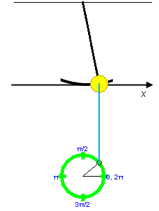
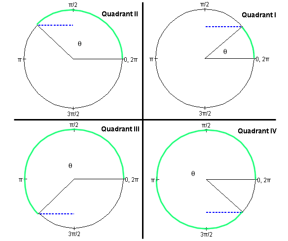
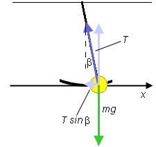
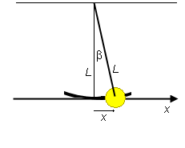
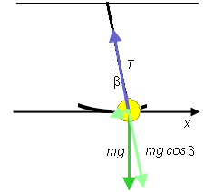

Prerequisites
Students should be familiar with the concepts of position, velocity, and acceleration at the vector level and have an understanding of these vectors in uniform circular motion. They should have a working knowledge of the sine and cosine functions for angles of any size and should be familiar with the radian measure of angles and Newton's second law of motion.
Students should be familiar with the general properties of simple harmonic motion as covered in the lesson accompanying the Simple Harmonic Motion (Spring) applet.
Learning Outcomes
Students will learn that the motion of a simple pendulum at small amplitudes is well approximated by projected uniform circular motion and therefore by simple harmonic motion. They will be able to use this understanding to make quantitative predictions about the dependence of the pendulum's period on the amplitude of the motion, on the mass and length of the pendulum, and on the magnitude of the acceleration due to gravity.
Instructions
Students should know how the applet functions, as described in Help and ShowMe.
The applet should be open. The step-by-step instructions in the following text are to be done in the applet. You may need to toggle back and forth between instructions and applet if your screen space is limited.
 Simple Harmonic Motion and
Pendulum Motion
Simple Harmonic Motion and
Pendulum Motion
 Amplitude and Period in
Pendulum Motion
Amplitude and Period in
Pendulum Motion
 Mass and Period in Pendulum
Motion
Mass and Period in Pendulum
Motion
 Length and Period in Pendulum
Motion
Length and Period in Pendulum
Motion
 Acceleration Due To Gravity and
Period in Pendulum Motion
Acceleration Due To Gravity and
Period in Pendulum Motion
 Appendix
Appendix
 Angles: Radian vs. Degree Measure
Angles: Radian vs. Degree Measure
 Proof that Pendulum Motion is
Approximately SHM
Proof that Pendulum Motion is
Approximately SHM
Definition. Simple harmonic motion (SHM) is a motion identical to the projection of a uniform circular motion onto a straight line.The straight line can have any orientation. In the case of pendulum motion, the orientation is horizontal.
Exercise 1. RESET the applet. Set the amplitude to A = 0.52 m and the pendulum length to L = 2.00 m. Display the Reference Circle and the blue Projection Line that projects the reference point on the circle vertically upward. PLAY the motion.
Observe that the vertical projection line goes through the center of the pendulum bob at all times, as illustrated in Figure 1 below. This means that the motion of the pendulum is uniform circular motion projected onto the pendulum bob's circular path.

Figure 1
In the real world, this would be only approximately true, but the difference between the pendulum's motion and the projected circular motion (SHM approximation) is so slight to not be noticeable for motions with small amplitude. For large amplitudes, corresponding to deflection angles of 60o or more, pendulum motion is far from SHM.
Figure 1 shows a horizontal x-axis through the bottom of the pendulum's swing. We will use the pendulum bob's x-coordinate to describe the bob's position, where x = 0 at the bottom of the swing.
In the applet simulation (SHM approximation), the bob's x-coordinate coincides with the projection of the reference point onto the x-axis.
Conclusion. The position of a pendulum bob can be described in terms of the bob's coordinate on an x-axis like that in Figure 1. For small amplitudes, the time dependence of a real bob's x-coordinate is to a good approximation SHM. In the simulation and in this lesson, the time dependence of the bob's x-coordinate is taken to be SHM exactly.
Exercise 2. Continuing from Exercise 1, sketch a graph of x vs. t for the pendulum's motion assuming the motion starts on the far right, i.e., at x = A.
When done, compare your x vs. t graph to that displayed by the applet. To do so, select Position from the Graph Panel.
Note that the graduations on the time axis are fractions of 2π seconds. The reason for this choice of graduation is that the theoretical expression for the period T of a simple pendulum at small amplitude,
 T = 2π
T = 2π  (L/g),
(L/g),  (1)
(1)
contains a factor of 2π. This way
the graduations of the time axis can be directly related to
the factor (L/g). Equation (1) is derived in the
Appendix Proof that Pendulum
Motion is Approximately SHM.
Exercise 3. Using only symbols, write down a general equation for x(t) for the graph obtained in Exercise 2. The equation should contain the following constants:
The angular frequency ω is related to the period T by
 ω = 2π/T .
ω = 2π/T . (2)
(2)
Equ.(2) and the equations for SHM in general are dealt with in the Lesson accompanying the applet "Simple Harmonic Motion (Vertical Spring)".
Substitute the present values for A and ω into the general equation for x(t) to get the equation for x(t) that applies to the specific motion you have played. Check that your equation gives correct values for x(t) by working out x for different values of t and comparing the values you get with those on the graph in the applet.
Answer. The general equation for x(t) is
 x(t) = A cos ω t.
x(t) = A cos ω t. (3)
(3)
Substituting Expression (1) for T into Equ.(2) gives
 ω = (g/L).
ω = (g/L).  (4)
(4)
Substituting the present values of g and L into Equ.(4) gives
 ω = (9.8/2.00) = 2.21 rad/s.
ω = (9.8/2.00) = 2.21 rad/s.  (5)
(5)
With this value and A = 0.52 m, Equ.(3) becomes
 x(t) = 0.52
cos(2.21t).
x(t) = 0.52
cos(2.21t). (6)
(6)
Exercise 4. Repeat Exercises 2 and 3 for the velocity vx and the acceleration ax of the pendulum bob.

In this section you will investigate how the period of a simple pendulum oscillating with a small amplitude depends on the amplitude of the motion.
RESET the applet.
Set the amplitude to A = 0.52 m and the length to L = 2.00 m. Keep the other default settings.
Display
The Data box displays both the time t elapsed and the position x(t) of the pendulum bob.
Exercise 1. Measure the period T of oscillation of the pendulum.
To measure the period, run the motion until it completes one entire cycle. To get a more accurate value, time the pendulum for several complete cycles and divide the time by the number of cycles.
Result. You should find an "experimental" value for T close to 2.84 s
Exercise 2. Use Equ.(1) from the preceding section and the given settings to calculate the period T of the oscillation. Compare the result to what you found "experimentally".
Exercise 3. Repeat Exercises 1 and 2 with different amplitude settings. What is your conclusion about the relationship between amplitude and period?
Comment. According to legend, Galileo Galilei, about 400 years ago, timed the oscillations of a chandelier during a church service and found the period of oscillation to be independent of the amplitude. This led him to the invention of the pendulum clock.
In this section you will investigate how the period of a simple pendulum oscillating with a small amplitude depends on the mass of the pendulum bob.
RESET the applet.
Set the amplitude to A = 0.52 m and the length to L = 2.00 m. Keep the other default settings, including the setting of the mass at m = 0.50 kg.
Display
Exercise 1. Measure the period T of oscillation of the pendulum.
To measure the period, run the motion until it completes one entire cycle. To get a more accurate value, time the pendulum for several complete cycles and divide the time by the number of cycles.
Result. You should find an "experimental" value for T close to 2.84 s
Exercise 2. Use Equation (1) and the given settings to calculate the period T of the oscillation. Compare the result to what you found "experimentally".
Exercise 3. Repeat Exercises 1 and 2 with m = 1.00 kg, twice the previous value.
Does the period increase or decrease as the mass is increased?
Comment. Can you explain your observation in terms of basic physics principles? Hint: Compare the pendulum's motion to free fall motion. How does the latter depend on the mass of the falling particle and what are the reasons in this case?
In this section you will investigate how the period of a simple pendulum oscillating with a small amplitude depends on the length of the pendulum.
RESET the applet.
Set the amplitude to A = 0.52 m and the length to L = 2.00 m. Keep the other default settings.
Display
Exercise 1. Measure the period T of oscillation of the pendulum.
To measure the period, run the motion until it completes one entire cycle. To get a more accurate value, time the pendulum for several complete cycles and divide the time by the number of cycles.
Result. You should find an "experimental" value for T close to 2.84 s
Exercise 2. Use Equation (1) and the given settings to calculate the period T of the oscillation. Compare the result to what you found "experimentally".
Exercise 3. Repeat Exercises 1 and 2 with L = 1.00 m, one half of the previous value. Does the period increase or decrease as the length is decreased? By what factor does it decrease? By the same factor of two?
Comment. The dependence of the period on the length of a pendulum has implications for running. Legs are natural pendula. Smaller animals with shorter legs can move their legs faster (at a greater frequency or shorter period) than larger animals with longer legs.
In this section you will investigate how the period of a simple pendulum oscillating with a small amplitude depends on the magnitude of the acceleration due to gravity.
RESET the applet.
Set the amplitude to A = 0.52 m and the length to L = 2.00 m. Keep the other default settings, in particular, keep the magnitude of the acceleration due to gravity at g = 9.8 m/s2.
Display
Exercise 1. Measure the period T of oscillation of the pendulum.
To measure the period, run the motion until it completes one entire cycle. To get a more accurate value, time the pendulum for several complete cycles and divide the time by the number of cycles.
Result. You should find an "experimental" value for T close to 2.84 s
Exercise 2. Use Equation (1) and the given settings to calculate the period T of the oscillation. Compare the result to what you found "experimentally".
Exercise 3. Repeat Exercises 1 and 2 with g = 19.6 m/s2, twice the previous value. Does the period increase or decrease as the magnitude of the acceleration due to gravity is increased? By what factor does it decrease? By the same factor of two?
Comment. The dependence of the period on the magnitude g of the acceleration due to gravity has implications for pendulum clocks. Since g varies across the surface of the earth, pendulum clocks will run slower or faster at different points on the earth. Vice versa, one can use the rate at which a pendulum clock runs at a given location to measure g at that location.
>>>>> Appendix <<<<<

Sine Function. The following Figure A1 illustrates the definition of the sine function in the first four quadrants.

Figure A1
For each quadrant, an angle θ is indicated by means of a green circular arc linking two radii in grey. One of the radii is always horizontal and towards the right. The vertex of the angle is at the center of the circle. The angular measures in radians of special points are indicated along the circle. Remember the correspondence
2π rad = 360o.  (A1)
(A1)
Definition of the sine. Let the radius of the circle be equal to 1. Such a circle is called a unit circle. Then the sine of the angle θ is equal to the numerical value of the length of the vertical line (dotted red line in Figure A1) dropped onto the horizontal axis through the center of the circle. (In Quadrants II and III, this axis is not shown in Figure A1.)Imagine a pair of x,y axes with their origin at the center of the circle, the x-axis pointing to the right towards the 0 rad point and the y-axis pointing upward towards the π/2 rad point. Then,
sin θ = y
(A2)
where y is the y-coordinate of the point where the variable radius meets the unit circle.
This definition also works for angles greater than 360o or 2π rad and less than 0. For the angles θ and θ + 2πn rad, where n is any positive or negative integer, the variable radius points in the same direction. Consequently, the sine is the same for these angles. Thus, the sine is a periodic function with a period of 2π rad or 360o.
It is clear from the geometry of the unit circle that the sine function has values between -1 and 1. Check the four basic fixed points:
Check that, for angles in the first quadrant, the more general definition of the sine presented here agrees with the definition of the sine as the ratio of (opposite side)/hypotenuse in a right-angle triangle.
Cosine Function. The definition of the cosine in the four basic quadrants is illustrated in Figure A2 below. Angles are indicated in the same way as in Figure A1. The circle is again a unit circle, i.e., a circle of radius 1.

Figure A2
Definition of the cosine. The cosine of the angle θ is equal to the numerical value of the length of the dotted blue line if the circle is a unit circle. This line is the perpendicular dropped from the point where the variable radius meets the unit circle to the vertical through the center of the circle. The vertical line through the center of the circle is not indicated in Figure A2.Imagine a pair of x,y axes with their origin at the center of the circle, the x-axis pointing to the right towards the 0 rad point and the y-axis pointing upward towards the π/2 rad point. Then,
cos θ = x
where x is the x-coordinate of the point where the variable radius meets the unit circle.
This definition also works for angles greater than 360o or 2π rad and less than 0. For the angles θ and θ + 2πn rad, where n is any positive or negative integer, the variable radius points in the same direction. Consequently, the sine is the same for these angles. Thus, the sine is a periodic function with a period of 2π rad or 360o.
Like the sine, the cosine is a function whose values are between -1 and 1. Check the four basic fixed points:
Check that for angles in the first quadrant, the more general definition of the cosine presented here agrees with the definition of the cosine as the ratio of (adjacent side)/hypotenuse in a right-angle triangle.
Radian measure. Figure A3 below illustrates the definition of the radian measure of an angle.

Figure A3
The angle θ is the opening between the two rays labeled L1 and L2 leaving from the vertex O. The circular arc s drawn at radius r can be used to measure the radius because, for a given radius, the length of the arc is proportional to θ.
The radian measure of the angle θ is defined as the ratio
θ = s / r .  (A6)
(A6)
One needs to divide s by r, because s is proportional to r for a given angle θ so that only the ratio s / r is independent of r.
A numerical example is illustrated in the diagram. The radian unit is abbreviated "rad". In dimensional analysis, the "rad" can be treated as a pure number because the radian measure is defined as a ratio of two lengths.
Degree measure. The degree measure of an angle is based on dividing the full circle into 360 equal parts called degrees. The symbol for degree is "o".
Since a full circle of radius r has a circumference (arc) equal to 2πr, the radian measure of a full circle is 2πr / r = 2π rad. Thus, we have the correspondence
360o = 2π rad .  (A7)
(A7)
This implies that 1 rad corresponds to 57.3o:
1 rad = 57.3o .  (A8)
(A8)
In the Lesson accompanying the applet "Simple Harmonic Motion (Vertical Spring)" it is shown that a point-particle moving along an x-axis performs SHM if the acceleration ax of the particle is related to the particle's position x by the equation
 ax = - ω2x .
ax = - ω2x .
 (A9)
(A9)
where ω2 is a constant. Actually, Equ.(A9) is obtained in that Lesson for a particle moving vertically along a y-axis. Of course, SHM is possible along an x-axis as well and in that case will satisfy Equation (A9).
If you see Equation (A9) here for the first time, you may accept without proof that it characterizes SHM. The equation says that the acceleration ax of a point performing SHM along an x-axis is proportional to the point's displacement x from an equilibrium position at x = 0 and is opposite to the displacement (minus sign in Equation (A9)). The positive proportionality constant is written in the form ω2.
The constant ω can be shown to be equal to the angular frequency 2π/T of the motion and equal to the constant angular speed with which the reference point moves around the reference circle.
The proof that the motion of a simple pendulum is SHM will consist in the demonstration that the x-coordinate of the pendulum bob satisfies an equation of form (A9) to a very good approximation if the amplitude of the motion is small.
We begin by applying Newton's second law of motion to the bob. In order to understand clearly what forces are acting on the bob, let us mak a free-body diagram for the bob. Such a diagram is shown in Figure A4 below.

Figure A4
Two forces are acting on the bob, the gravitational force of magnitude mg and the force exerted by the string on the bob of magnitude T. The magnitude T is called the string tension.
The components of the force exerted by the string are shown in pale purple. The horizontal component of this force has magnitude T sin β where β is the angle by which the pendulum string is deflected from the vertical. Remember from Help and ShowMe that in this applet we distinguish between two angles: β and the angle θ defining the position of the point in the reference circle. In the following demonstration we will be concerned with the angle β.
Since the horizontal component of the gravitational force is 0, the horizontal or x-component of the net force is equal to -T sin β. The minus sign is necessary because the horizontal component points in the negative x-direction. Therefore, Newton's second law applied to the particle gives for the x-component of the particle's acceleration the equation
 max = -T sin β.
max = -T sin β.
 (A10)
(A10)
We need to determine the string tension T. It turns out that, for small amplitudes, T can simply be replaced by mg to a good approximation. The reasoning, which is a bit involved but a good exercise in basic physics, is given below. First, however, let us just accept the result and replace T by mg in Equ.(A10). We obtain, after dividing by m,
 ax = -g sin β.
ax = -g sin β.
 (A11)
(A11)
Equ.(A11) gives us an expression for the acceleration, but not one that is of the form (A9). To achieve that we must eliminate sin β in favor of x. This can be done as follows.
Figure A5 below shows that the deflection x of the pendulum bob divided by the length L of the pendulum is equal to the tangent of the deflection angle β. In symbols,
 x/L = tan β.
x/L = tan β.
 (A12)
(A12)

Figure A5
For a deflection angle of 10o, the tangent of the angle differs from the sine by about 1.5%. For smaller angles, this percentage difference is less. Check it with a pocket calculator.
Approximating tan β by sin β in Equ.(A12) gives us the approximate equation
 x/L = sin β.
x/L = sin β.
 (A13)
(A13)
Substituting this expression for sin β into Equ.(A11) gives for the acceleration an expression that is of form (A9),
 ax = - (g/L)
x .
ax = - (g/L)
x . (A14)
(A14)
Thus, within the approximations made, which are of the order of 1% for a deflection angle of 10o and less for smaller angles, the motion of a simple pendulum is SHM.
Comparing the right-hand sides of Eqs.(A9) and (A14) gives the following expression for ω:
 ω = g/L
.
ω = g/L
. (A15)
(A15)
From this we get for the period P (we are using P for the period here because T is already used for tension):
 P = 2π/ ω = 2πL/g
.
P = 2π/ ω = 2πL/g
. (A16)
(A16)
This is Equ.(1) from the first section of this Lesson. (In that equation, the symbol for the period is T.)
Let's complete this set of derivations by demonstrating that, within the magnitude of the approximations made, the tension T can be equated to the gravitational force mg.
For this purpose, let's look at the free-body diagram for the bob once more, but this time taking components in directions parallel and perpendicular to the string. The result is shown in Figure A6 below.

Figure A6
The pendulum bob moves on a circular path and therefore has a radial (centripetal) component of acceleration directed from the bob up the string and of magnitude v2/L where v is the bob's speed at the given instant. With that acceleration component, Newton's second law applied to the bob in the radial direction gives the equation
 T - mg cos β =
mv2/L .
T - mg cos β =
mv2/L . (A17)
(A17)
Solving for T gives
 T = m[g cos β + v2/L] .
T = m[g cos β + v2/L] .
 (A18)
(A18)
For small β, 10o or less, cos β is within 1.5% of 1. Check it with your pocket calculator. Thus we make an error by the same order of magnitude as before if we simply replace cos β by 1 in Equ.(A18). An error of similar magnitude is made if we drop the v2/L term in comparison with the g term in the square bracket in Equ.(A18). In fact, the two errors tend to compensate each other. With these two approximations, Equ.(A18) reduces to
 T = mg .
T = mg . (A19)
(A19)
One can estimate the magnitude of v2/L as follows. When the pendulum bob is as far to the right as it will go, i.e., at x = A, its center is elevated by an amount h above its bottom position. At this point, the bob has an amount of gravitational potential energy equal to mgh relative to that at the bottom point. This much potential energy is converted into kinetic energy as the bob moves from x = A to x = 0, where the bob has its maximum kinetic energy. Thus,
 (m/2)vmax2 =
mgh.
(m/2)vmax2 =
mgh. (A20)
(A20)
Multiplying this equation by 2/(mL) gives
 vmax2/L =
2g(h/L).
vmax2/L =
2g(h/L). (A21)
(A21)
Since (h/L) is very much smaller than 1 for small amplitudes, vmax2/L is very much smaller than g,
 vmax2/L <<
g.
vmax2/L <<
g. (A22)
(A22)
Thus, we are justified in approximating the tension T simply by mg.
However, as the considerations in this section show, a small mistake is made in identifying the motion of a simple pendulum with SHM, even at small amplitudes.